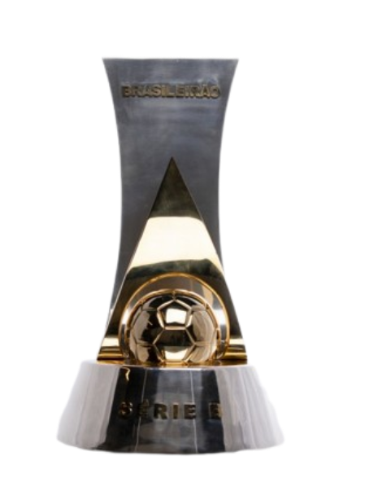
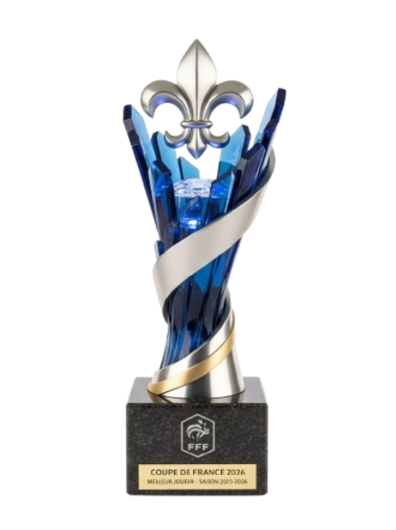

Jogos
1230
Criador brutal de jogadas, dominante entre clubes e seleção, com uma carreira cercada de troféus, prêmios e noites decisivas.
Cada escudo abre uma página própria com estatísticas totais, ambientação visual do clube e a galeria completa de taças daquela passagem.

Primeira etapa, agora ainda mais pesada em números e com duas ligas bolivianas no currículo.

Era dominante na América do Sul com números gigantes e sala de troféus pesada.

Apogeu europeu, sequência histórica de títulos e brilho máximo na Champions.

Capitão da seleção com campanha marcante e conquista continental.
O pacote completo de conquistas em clubes e seleção reunido em uma única vitrine.





